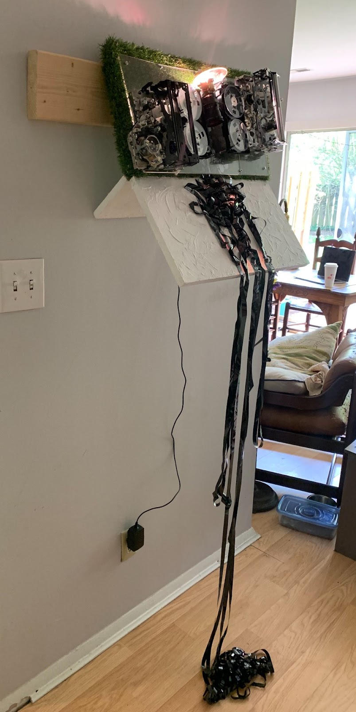

I'm a Data Engineer, Time Based Media Technician and Artist. I currently work at Artsy as a Data Engineer.
I love to be busy! If you want to hire me for a freelance job, exhibit my artwork or talk about a commission email me at emma.jk.dickson@gmail.com
I'm a hard worker.
Artsy
I currently work at Artsy as a Data Engineer on the Data Platform Team. In this role I work to improve and maintain ELT pipelines. I work in close contact with the Data team and primarily in Ruby/Python.
IBM: Data Insights Squad
As a Data Scientist/Data Engineer I focused on finding ways to implement better Agile practices based on company wide tool usage.
Webrecorder
I worked at Webrecorder as a General Developer. I'm very passionate about making web archiving accessible and continue to stay close to the community.
Conservation of electronic and computer based art is my passion. Please hire me.
net.flag
I was a part of the team that executed the 2019 Restoration of net.flag for the Guggenheim. Visit the restored site here!
BRANDON
I was a part of the team that executed the 2016-2017 Restoration of BRANDON for the Guggenheim. BRANDON is a seminal piece of net art and I'm very proud to have helped make it available to the public again. Visit the restored site here!
Tall Ships
Code Analysis/Documenation of Tall Ships for Ben Fino-Radin
The Tate
Code Analysis/Documentation of Le Match des couleurs
The David Wojnarowicz Knowledge Base
I worked as a coder and user experience test subject for the development of the Wojnarowicz Knowledge Base which you can view here.
The Nasher
I helped The Nasher perform an assessment of their Time Based Media Collection and it's condition.
The Electronic Literature Organization
I helped to develop and maintain the ELO's hyrax archive
I make art sometimes
Mixed Connections
Mixed Connections re-combines and scrambles actual craigslist missed connections posts to explore identity and longing on the net.
Washing Machine
Washing Machine gives viewers an online cleansing ritual. Anything entered into the text box will be encoded into colors upon hitting "Wash". This stops the swimmer in their rotation. Upon hitting "Rinse" the encoded text is erased, and the swimmer continues their cycling.
I make art sometimes
Tinkerer's Aquarium

Mort

I make art sometimes
I'm Sorry
“I’m Sorry” is an apology for transitions. Two broken VHS cameras are transformed into a single projector. The projector displays a continual film loop collages self-portraits and found slides together, each image gradually building on the next, into an exploration of dysphoria

Closed Circuit 1
Closed Circuit is an ongoing series of sculptures where tv's are forced to experience introspection.

Closed Circuit 2
Closed Circuit is an ongoing series of sculptures where tv's are forced to experience introspection.

Glitch IRL
Custom slide viewer and slide collages made from found slides.

I'm Beside Myself
“I'm Beside Myself” is an interactive installation.
Users slip on a VR headset where a camera dangles above their head and voluntarily enter a space of anxiety and removal from themselves.

I make art sometimes
Shoutout to Ross Grady who really did the heavy lifting on this one
508 Loop Detected
508 Loop Detected Is a hardware collaboration project that resulted in a rgb based visual synth. I've used it in several local performances.